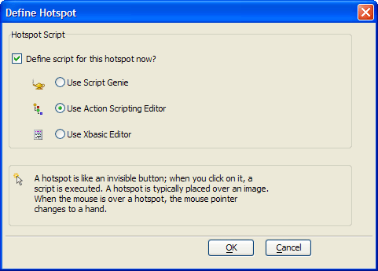
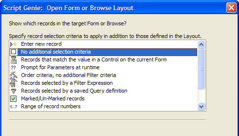

Creating and Programming a Hotspot with Action Scripting
the following procedure assumes that the developer has opened the form in the Form Editor . Follow these instructions to use Action Scripting to create and format a hotspot similar to hotspot4 .
Sketch the hotspot on the form.
When the Define Hotspot dialog box appears, click the Use Action Scripting Editor option button.
Click OK.

Click Add New Action.
In the Select Action dialog box, select "Form/Browse" in the Category list.
Select "Open Form or Browse Layout" in the Action list.
Click Next >.
Select "Help" in the Layout Name list.
Click Next >.
Click Next > in the Open Form or Browse Layout dialog box.

Click Next > and Finish.
See Also
Creating and Programming Hotspots with Xbasic, The InvoiceReportMenu Form, Using Xbasic to Create Queries